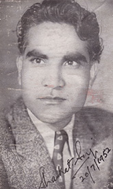
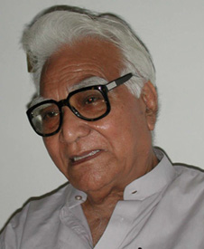

|
SHAUKAT SIDDIQI is a veteran fiction writer. He was born in 1923 in Lucknow. After Partition he moved to Pakistan, where he worked as a journalist. His literary output includes several volumes of short stories and three novels. His novel Khuda ki Basti was the winner of the Adamjee Prize for literature in 1960, and in 1984 he was awarded Pride of Performance, Pakistan’s most prestigious national award. Khuda ki Basti is available in English translation. He is retired and lives in Karachi. |
|  |  |
| PHOTO BY M.U. MEMON, 2001 |